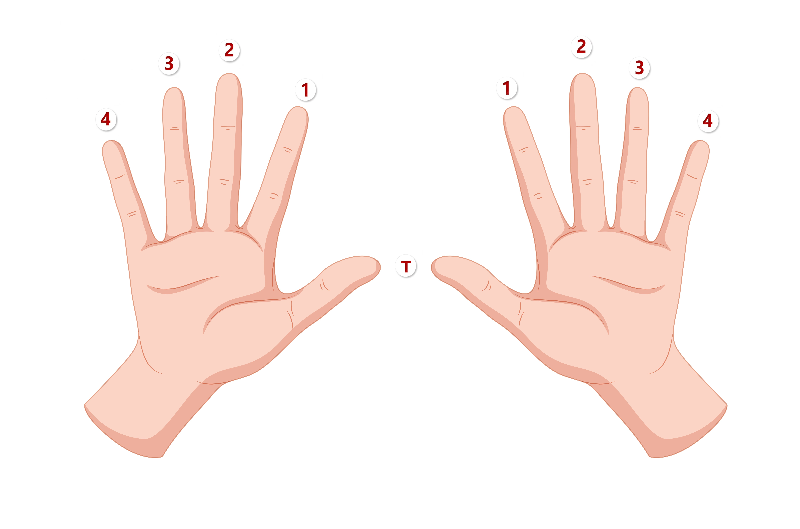
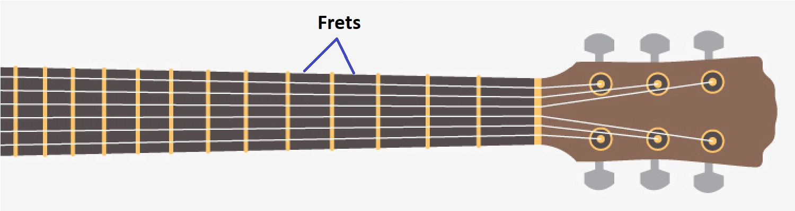
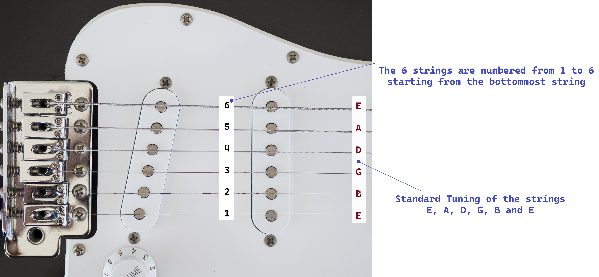

{% extends 'base_lessons.html' %}
{% block content %}
GETTING STARTED
Introduction: Fingers, Frets and Strings
# Fingers
To locate various notes and for finger plucking, we number the fingers on our hands as seen in the image.
Here, "T" stands for Thumb.

# Frets
Frets are the areas between the metallic partitions on the neck of the Guitar .

# Strings
We are all familiar what strings are. The following image shows the standard tuning of a Guitar which is
**E, A, D, G, B and E**. Strings are also numbered for locating notes on the fret board. The 6 strings on
the guitar are numbered 1, 2, 3, 4, 5 and 6 from the bottom up i.e. the thinnest string is numbered 1 and
the thickets string is numbered 6.
In the next section we will learn how to tune the Guitar in standard tuning.

{% endblock %}